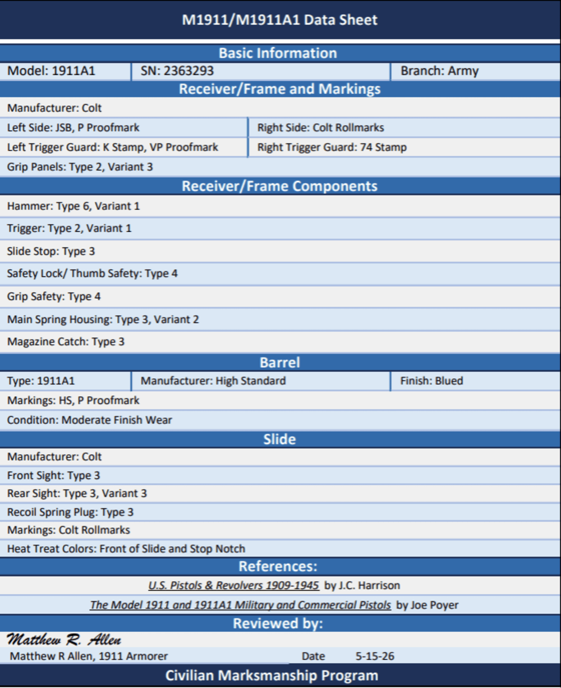

Colt M1911A1
Serial Number 2363293
CMP-documented late-war Colt M1911A1 record with JSB inspection, Colt frame and slide, High Standard barrel, Coltwood grips, and CMP data sheet review dated 15 MAY 2026.

Collector Grade
Serial number 2363293 is documented by a CMP M1911/M1911A1 data sheet as a Colt-manufactured M1911A1 with Colt frame, Colt slide, JSB inspection, Colt rollmarks, High Standard barrel, and appropriate late-war small parts.
This page records the pistol as a CMP-documented late-war Colt configuration. No arsenal rebuild mark is documented in the supplied photos or CMP sheet. The classification should remain evidence-based and tied to the CMP data sheet and photographs.
Evidence Gallery
pending upload
pending upload
pending upload
pending upload
pending upload
Why This Pistol Matters
Serial number 2363293 is a strong late-war Colt reference because it is supported by a CMP data sheet and retains a documented Colt frame, Colt slide, JSB inspection, High Standard barrel, Colt rollmarks, Coltwood-style grips, and correct M1911A1 component pattern.
For the 1911 Database, this pistol is useful as a CMP-documented Colt benchmark. It helps compare late-war Colt frame markings, slide markings, proofmarks, barrel markings, grips, and small parts against other Colt pistols in the 1945 production range.
Component Review
| Frame | Colt receiver documented by CMP. Right side marked UNITED STATES PROPERTY, serial number 2363293, and M1911A1 U.S. ARMY. |
| Inspector Mark | JSB inspection mark documented by CMP. P proofmark noted on the left side. |
| Trigger Guard Marks | Left trigger guard: K stamp and VP proofmark. Right trigger guard: 74 stamp. |
| Grips | Grip panels documented as Type 2, Variant 3. |
| Slide | Colt slide documented by CMP with Colt rollmarks, patent dates, Rampant Colt, and top P proofmark. Front sight Type 3. Rear sight Type 3, Variant 3. |
| Barrel | 1911A1 High Standard barrel documented by CMP. Markings: HS and P proofmark. Finish: blued. Condition: moderate finish wear. |
| Finish | Overall late-war military finish with moderate service wear noted. Heat-treat color visible at the front of the slide and stop notch per CMP sheet. |
| Hammer | Type 6, Variant 1 per CMP sheet. |
| Trigger | Type 2, Variant 1 per CMP sheet. |
| Slide Stop | Type 3 per CMP sheet. |
| Thumb Safety | Safety lock/thumb safety Type 4 per CMP sheet. |
| Grip Safety | Type 4 per CMP sheet. |
| Mainspring Housing | Type 3, Variant 2 per CMP sheet. |
| Magazine Catch | Type 3 per CMP sheet. |
| Magazine | Magazine markings not yet documented in the supplied photos. |
Configuration Scorecard
Preliminary overall configuration score: 58/60. This score reflects a CMP-documented late-war Colt configuration based on the CMP data sheet and currently supplied photographs.
Production Marker
Serial number 2363293 falls within late WWII Colt M1911A1 production and is best treated as a 1945-production pistol.
Production and Historical Context
Production
Colt was the original M1911/M1911A1 manufacturer and continued wartime M1911A1 production through late WWII. Serial 2363293 is a late-war Colt example.
Inspector
JSB refers to John S. Begley, whose inspection initials are associated with late-war Colt M1911A1 pistols.
High Standard Barrel
The CMP sheet documents a High Standard barrel with HS and P markings, a correct U.S. military barrel type commonly encountered in WWII M1911A1 pistols.
CMP Documentation
The CMP data sheet was reviewed by Matthew R. Allen, 1911 Armorer, and dated 15 MAY 2026.
Provenance Timeline
1945
Manufactured by Colt during late WWII M1911A1 production.
Service
Entered U.S. military inventory as a service pistol.
CMP
Documented by CMP data sheet with component review and armorer signature.
Archive
Documented by CMP sheet and owner-submitted photographs for the 1911 Database.
Open Documentation Items
- Upload right-side photo as 2363293-right.jpg.
- Upload left-side photo as 2363293-left.jpg.
- Upload serial-number close-up as 2363293-serial.jpg.
- Upload barrel HS/P proof close-up as 2363293-barrel.jpg.
- Document magazine baseplate and spine markings.
- Archive CMP auction listing or purchase/provenance paperwork if available.
Research Notes
Research method: This record separates CMP-documented observations from collector conclusions. The CMP data sheet is the primary source for component type, markings, and condition notes.
The current assessment is based on the CMP data sheet and owner-submitted photographs showing a Colt frame and slide, late-war Colt rollmarks, serial number 2363293, JSB/P proofmark area, and overall late-war Colt configuration.